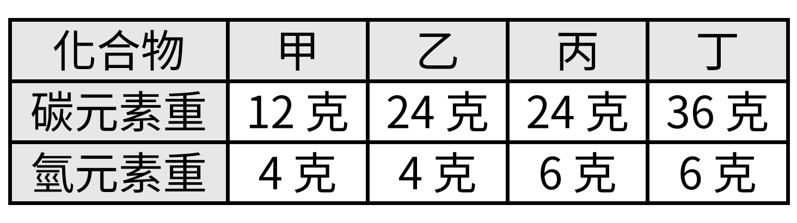
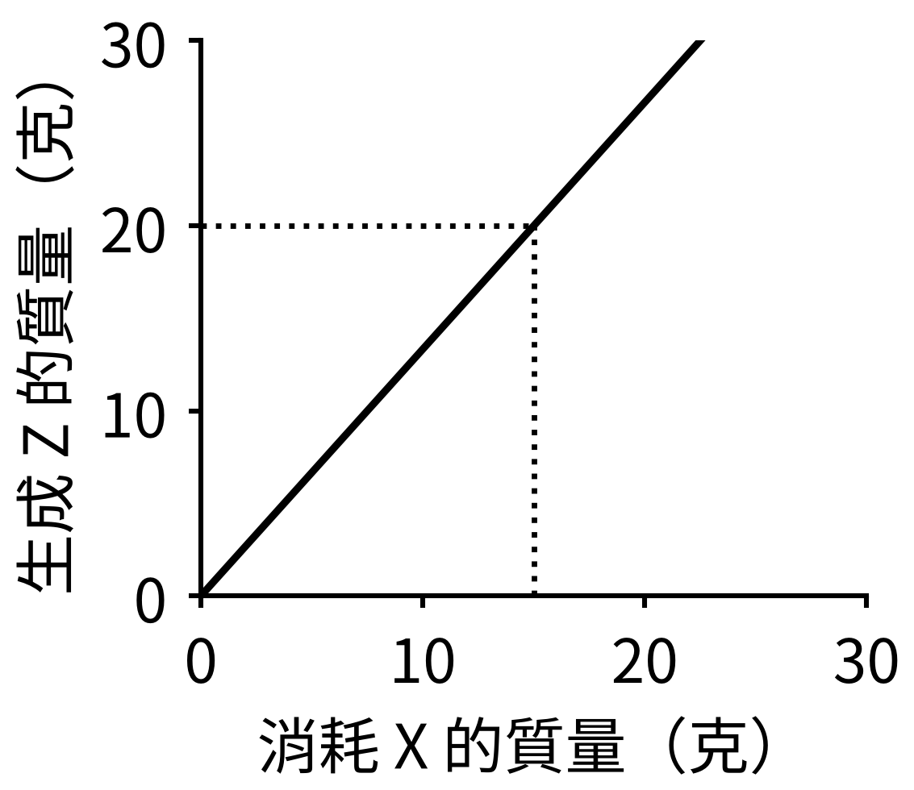
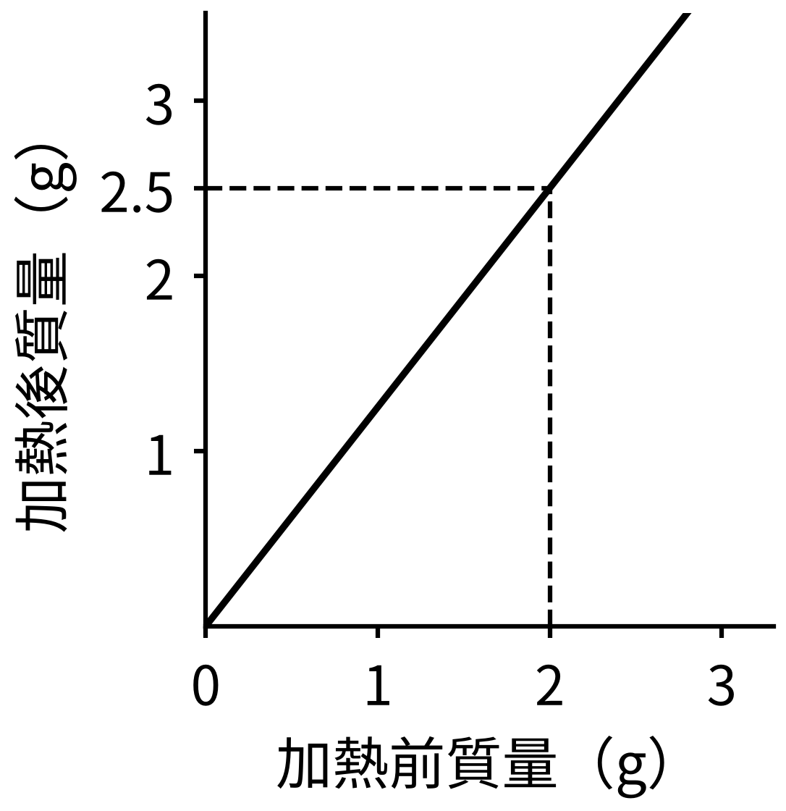

範圍：講義 p.19～28
基礎題
下列關於化學發展史的敘述，何者正確？（多選）
- (A) 火的使用可視為化學發展的肇始
- (B) 於煉金術時期，人類學會了實驗的技巧
- (C) 四元素說的內容正確的描述了物質的組成
- (D) 拉瓦節的貢獻卓越，被尊稱為現代化學之父
- (E) 道耳頓提出原子說，被視為近代化學的重要里程碑
看答案與詳解
答案：(A)(B)(D)(E)
(B) ✔ 煉金術士雖然沒煉出金，但發展出蒸餾、昇華等實驗技巧。
(C) ✘ 四元素說（土、水、火、氣）是錯誤的物質觀。
(D) ✔ 拉瓦節以定量實驗建立質量守恆，被尊為現代化學之父。
(E) ✔ 道耳頓原子說是近代化學的里程碑。
被稱為「化學之父」且提出「化學元素論」的化學家是誰？
- (A) 道耳頓
- (B) 拉瓦節
- (C) 法拉第
- (D) 湯姆森
看答案與詳解
答案：(B)
關於化學的基本定律，下列定律與提出者哪些正確？（多選）
- (A) 原子說－道耳頓
- (B) 質量守恆定律－史塔爾
- (C) 定比定律－普魯斯特
- (D) 分子說－亞佛加厥
- (E) 氣體化合體積定律－給呂薩克
看答案與詳解
答案：(A)(C)(D)(E)
(B) ✘ 質量守恆定律由拉瓦節提出；史塔爾提出的是燃素說。
(C) ✔ 普魯斯特提出定比定律。
(D) ✔ 亞佛加厥提出分子說。
(E) ✔ 給呂薩克提出氣體化合體積定律。
〔易錯〕史塔爾＝燃素說；拉瓦節＝質量守恆、推翻燃素說。
某固體化合物 A 經過加熱後會分解生成固體 B 與氣體 C，今取 100 克 A 加熱，經過一段時間後，發現剩下 20 克的 A，並生成 44.8 克的 B，這段時間內，共生成氣體 C 多少克？
- (A) 80.0
- (B) 65.2
- (C) 64.8
- (D) 35.2
- (E) 24.8
看答案與詳解
答案：(D)
質量守恆：80＝44.8＋C ⟶ C＝35.2 克，選 (D)。
〔易錯〕剩下的 20 克 A 沒有反應，不能算進去。
銅鏽及孔雀石中皆含有相同的一種化合物──碳酸銅，其中所含銅、碳、氧三種元素的質量比約為 16：3：12，皆維持固定，此結果可證明下列何種定律？
- (A) 定比定律
- (B) 質量守恆定律
- (C) 倍比定律
- (D) 亞佛加厥定律
- (E) 氣體化合體積定律
看答案與詳解
答案：(A)
(B) 質量守恆比的是反應前後總質量；(C) 倍比要兩種以上化合物；(D)(E) 講氣體體積與分子數。
小吳在化學課提出一個問題：「有一氣體物質由 A、B 兩種元素組成，若 16 克的該物質含有 12 克的 A 元素，則 3 克的 A 可和多少克的 B 化合成該氣體？」曉萱立刻回答：「1 克的 B 元素」。試問曉萱是根據下列哪一定律得到答案？
- (A) 定比定律
- (B) 氣體化合體積定律
- (C) 倍比定律
- (D) 質量守恆定律
- (E) 亞佛加厥定律
看答案與詳解
答案：(A)
根據「同一化合物，組成元素的質量比固定」⟶ 定比定律，選 (A)。
(C) 倍比定律要有兩種以上化合物；(D) 質量守恆只說反應前後總質量相等。
元素 X 與 Y 形成同一化合物，則該化合物之組成不包含下列何者？
- (A) 0.60 克 X 及 0.40 克 Y
- (B) 0.75 克 X 及 0.50 克 Y
- (C) 0.90 克 X 及 0.60 克 Y
- (D) 0.80 克 X 及 0.60 克 Y
- (E) 0.45 克 X 及 0.30 克 Y
看答案與詳解
答案：(D)
(A)(B)(C)(E) X：Y 都是 3：2；(D) 0.80：0.60＝4：3 ✘，選 (D)。
〔易錯〕題目問「不包含」。
下列哪一項敘述是「倍比定律」？
- (A) 元素在形成化合物時，其組成元素的含量具有一定比例關係
- (B) 同一組元素可形成多種不同化合物時，若有一組成元素的含量相同，則另一種組成元素的含量必具有簡單整數比的關係
- (C) 同溫、同壓下，氣體間反應體積必成簡單整數比的關係
- (D) 化學反應中，反應物與產物之莫耳數具有簡單整數比的計量關係
- (E) 同溫、同壓下，氣體的體積與分子數成正比關係
看答案與詳解
答案：(B)
(B) ✔ 倍比定律（道耳頓）。
(C) ✘ 氣體化合體積定律。
(D) ✘ 化學計量（係數比）。
(E) ✘ 亞佛加厥定律。
道耳頓原子說的內容有一點說明：「化學反應是原子間的重新排列組合，在反應過程中，原子的種類與數目均不改變」，請問此說法可以解釋哪一個化學定律？
- (A) 質量守恆定律
- (B) 定比定律
- (C) 倍比定律
- (D) 氣體化合體積定律
- (E) 亞佛加厥定律
看答案與詳解
答案：(A)
（定比、倍比定律是由「化合物由固定種類、固定數目的原子結合而成」來解釋。）
下列何組可用來修正道耳頓原子說中：「相同元素具有相同的質量」這項敘述？
- (A) 石墨、金剛石
- (B) 12C、13C
- (C) SO2、SO3
- (D) 14C、14N
- (E) O2、O3
看答案與詳解
答案：(B)
(B) ✔ 12C 與 13C 同為碳，質量不同。
(A)(E) ✘ 同素異形體。(C) ✘ 倍比定律的例子。(D) ✘ 不同元素。
有關各學說與定律的說明，下列哪些正確？（應選 2 項）（多選）
- (A) 定比定律由道耳頓提出，強調化合物無論來源或是製備方法，其組成元素之間具有一定的質量比
- (B) 倍比定律可以用來佐證原子說
- (C) 1 g 的氫可以合成 9 g 水，推斷出 2 g 的氫可以合成 18 g 的水，這是根據定比定律
- (D) 拉塞福提出質量守恆定律推翻燃素說
- (E) 道耳頓提出原子不能以半顆存在，氣體分子能以體積最簡整數比進行反應
看答案與詳解
答案：(B)(C)
(B) ✔ 道耳頓由原子說推論出倍比定律，實驗結果支持原子說。
(C) ✔ 水中 H：H2O＝1：9 固定，2 克氫可生成 18 克水（定比定律）。
(D) ✘ 質量守恆由拉瓦節提出並推翻燃素說。
(E) ✘ 氣體以簡單整數體積比反應是給呂薩克的定律；道耳頓認為原子不可分割，反而無法解釋此定律。
反應 A＋2B⟶C，當取 8 克 A 與 10 克 B 充分反應後，A 被用完了但剩下 2 克的 B，根據質量守恆定律，試求反應時 A、B、C 三者的質量比？
- (A) 8：10：2
- (B) 1：2：1
- (C) 1：1：2
- (D) 8：8：2
看答案與詳解
答案：(C)
質量守恆：C＝8＋8＝16 克。
質量比 A：B：C＝8：8：16＝1：1：2，選 (C)。
〔易錯〕係數 1：2：1 是「粒子數比」，不是質量比。
下列何者遵守質量守恆定律？（多選）
- (A) 酒精的燃燒
- (B) 鐵釘的生鏽
- (C) 鈾-235 的分裂
- (D) 氫與氘融合成氦
- (E) 河水經太陽照射後的蒸發作用
看答案與詳解
答案：(A)(B)(E)
(A)(B) ✔ 化學變化。(C) ✘ 核分裂。(D) ✘ 核融合。(E) ✔ 物理變化。
將竹筷用酒精燈燃燒後秤重，發現其質量減輕了，關於此現象較合理的解釋為下列何者？
- (A) 物質燃燒後與氧原子結合，質量應該要增加
- (B) 量測誤差，根據質量守恆定律，反應前後總質量要相同
- (C) 量測正確，質量守恆定律不適用於燃燒反應
- (D) 量測正確，燃燒產生氣體，氣體散失在空氣中，因此質量減輕
- (E) 根據氣體化合體積定律，燃燒後竹筷、氣體的體積比，與它們的莫耳數成正比
看答案與詳解
答案：(D)
質量守恆仍成立：竹筷＋消耗的 O2＝灰燼＋CO2＋H2O；若在密閉容器中燃燒，總質量不變。
(E) ✘ 氣體化合體積定律只適用於氣體。
關於質量守恆定律，下列哪些敘述正確？（應選 2 項）（多選）
- (A) 可據以推知反應中分子不生不滅（守恆）
- (B) 可用道耳頓原子說加以解釋
- (C) 化學反應過程中，分子個數不變
- (D) 一般化學反應中原子種類及個數不變
- (E) 能量不滅
看答案與詳解
答案：(B)(D)
(B) ✔ 化學反應只是原子重新組合，原子不生不滅，故質量守恆。
(C) ✘ 分子個數可能改變，例 2H2＋O2⟶2H2O。
(D) ✔ 一般化學反應中原子種類及個數不變。
(E) ✘ 能量不滅不是質量守恆定律的內容。
A＋3B ⟶ 2C，當取 8 克的 A 與 26 克的 B 充分反應後，A 被用完了但剩下 2 克的 B，試求若有 72 克 B 完全反應，會產生 C 質量為幾克？
- (A) 144
- (B) 96
- (C) 48
- (D) 36
- (E) 24
看答案與詳解
答案：(B)
B：C＝24：32＝3：4（質量比固定）。
72 克 B ⟶ C＝72×4/3＝96 克，選 (B)。
已知 3A＋2B ⟶ 2C 中，A、B、C 表不同的氣體分子，若 A、C 之分子量為 24 及 72，則 B 的分子量為若干？
- (A) 12
- (B) 36
- (C) 40
- (D) 48
- (E) 64
看答案與詳解
答案：(B)
〔易錯〕分子量要乘上係數再相加。
下列敘述何者可說明定比定律？（應選 2 項）（多選）
- (A) 光合作用產生的水與酸鹼中和產生的水組成相同
- (B) 在密閉容器中，化學反應前後的總質量不變
- (C) 石墨和鑽石都是由碳原子所組成的
- (D) NO2 可由硝酸照光分解而得，也可由空氣中的氧氣氧化一氧化氮製取
- (E) 木炭燃燒產生一氧化碳與二氧化碳
看答案與詳解
答案：(A)(D)
(A) ✔ 不同來源的水組成相同。
(B) ✘ 質量守恆定律。
(C) ✘ 同素異形體，與定比定律無關。
(D) ✔ 不同製法得到的 NO2 組成相同。
(E) ✘ CO、CO2 兩種化合物是倍比定律的例子。
甲、乙、丙、丁四種碳氫化合物，分析其組成元素的質量比，得結果如附表，則甲、乙、丙、丁四者中何者可能為相同的化合物？這是根據何種化學定律所做的推論？

- (A) 乙丁，倍比定律
- (B) 甲丙，倍比定律
- (C) 甲乙丁，定比定律
- (D) 乙丁，定比定律
- (E) 甲丙，定比定律
看答案與詳解
答案：(D)
乙、丁質量比相同 ⟶ 可能為同一化合物；依據「同一化合物組成元素的質量比固定」⟶ 定比定律，選 (D)。
氧化鎂是一種微溶於水的鹼性物質，可用於治療胃灼熱與胃酸過多。大鑵與小蘿兄妹兩人在實驗室利用不同的方式製備氧化鎂，方法如下。 大鑵：取 0.9 克鎂在足量的氧氣中燃燒，可得 1.5 克氧化鎂。 小蘿：取 1.2 克鎂在足量的二氧化碳中燃燒，可得 2.0 克氧化鎂與 0.3 克的碳。 請問兩人的實驗數據可以驗證何種定律？
- (A) 定比定律
- (B) 倍比定律
- (C) 質量守恆定律
- (D) 亞佛加厥定律
- (E) 氣體化合體積定律
看答案與詳解
答案：(A)
小蘿：O＝2.0−1.2＝0.8 克，Mg：O＝1.2：0.8＝3：2。
不同方法製得的氧化鎂組成相同 ⟶ 定比定律，選 (A)。
（題目沒給 CO2 的質量，無法驗證質量守恆。）
1.2 克碳與 3.2 克的氧氣反應可產生 4.4 克的 CO2，則分解 CaCO3 所得的 CO2 2.2 克中，所含的碳有若干克？
- (A) 0.3
- (B) 0.6
- (C) 0.9
- (D) 1.2
- (E) 2.0
看答案與詳解
答案：(B)
定比定律：不論來源，CO2 組成相同 ⟶ C＝2.2×3/11＝0.6 克，選 (B)。
小思在實驗室中進行實驗，第 1 次實驗取鎂 0.6 克在 0.4 克的氧氣中完全燃燒，可得氧化鎂 1.0 克。第 2 次實驗取鎂 1.8 克在足量的二氧化碳中燃燒，則應可生成氧化鎂多少克？
- (A) 1.8
- (B) 1.2
- (C) 2.4
- (D) 3.0
- (E) 3.6
看答案與詳解
答案：(D)
定比定律：氧化鎂不論怎麼製得，組成都一樣 ⟶ MgO＝1.8×1.0/0.6＝3.0 克，選 (D)。
〔易錯〕與 CO2 反應時，生成的氧化鎂組成仍相同。
下列有關物質性質的實際敘述，哪些可以使用倍比定律說明？
- (A) 銅鏽及孔雀石都可為碳酸銅的來源，得到的碳酸銅元素成分比均相同
- (B) 碳和氧氣反應生成一氧化碳與二氧化碳兩種化合物，當固定碳質量時，所使用的氧質量為 1：2 的簡單整數比
- (C) 碘化鉀水溶液與硝酸鉛水溶液反應，產生出碘化鉛的黃色沉澱與硝酸鉀水溶液，反應前後質量不變
- (D) 氫氣和氧氣在同溫同壓下結合成水蒸氣時，三者間的反應體積比為 2：1：2
- (E) 氫氣（H2）是由兩個氫原子所組成、氧氣（O2）是由兩個氧原子所組成，反應後形成的水蒸氣（H2O）為三原子所組成的分子
看答案與詳解
答案：(B)
(A) ✘ 定比定律。
(B) ✔ 固定碳 12 克，CO、CO2 中氧為 16、32 克，1：2。
(C) ✘ 質量守恆定律。
(D) ✘ 氣體化合體積定律。
(E) ✘ 分子由原子組成，是分子說。
下列三種化合物 NO、NO2 與 N2O4，若各化合物中氮元素的質量相等時，則各化合物中所含氧元素的質量比為何？（NO：NO2：N2O4）
- (A) 1：2：4
- (B) 1：2：2
- (C) 2：1：1
- (D) 2：1：4
- (E) 2：2：1
看答案與詳解
答案：(B)
固定 N 時 O 質量比＝1：2：2，選 (B)。
〔易錯〕N2O4 有 2 個 N，要先除以 2，不能直接比下標 1：2：4。
A、B 兩種元素化合成 AB4、A2B4、A3B4 三種化合物，今將三種化合物中 A 的質量固定，則 B 的質量依序所成的簡單整數比為：
- (A) 2：3：4
- (B) 1：4：6
- (C) 6：3：2
- (D) 6：3：4
- (E) 1：2：3
看答案與詳解
答案：(C)
B 的質量比＝24：12：8＝6：3：2，選 (C)。
〔易錯〕B 的下標都是 4，但 A 的數目不同，要先把 A 調成一樣。
地球存在有 CO、CO2 兩種碳的氧化物，科學家推測，金星的大氣層存在有另一種碳的氧化物 CxOy（x、y 均為正整數），已知此三種化合物中碳元素的質量相等時，各化合物中氧元素的質量比（CO：CO2：CxOy）為 2：4：3，試問 CxOy 最可能為下列何者？
- (A) C2O
- (B) C2O3
- (C) C2O5
- (D) C4O5
- (E) C4O9
看答案與詳解
答案：(B)
CO：1；CO2：2 ⟶ 比例 2：4：3 表示 CxOy 每個 C 配 1.5 個 O。
x：y＝2：3 ⟶ C2O3，選 (B)。
下列哪幾組物質可以說明倍比定律？（多選）
- (A) C60、C72
- (B) 11H、21H
- (C) NH3、N2H4
- (D) PCl3、PCl5
- (E) CO、CO2
看答案與詳解
答案：(C)(D)(E)
(A) ✘ 同素異形體（元素）。
(B) ✘ 同位素（原子）。
(C) ✔ 固定 N：N2H6 與 N2H4，H 為 3：2。
(D) ✔ 固定 P，Cl 為 3：5。
(E) ✔ 固定 C，O 為 1：2。
關於化學基本定律的敘述，下列何者正確？
- (A) 同溫、同壓下，同體積之各種物質含有同數的分子
- (B) 原子說可以解釋定比定律、倍比定律及氣體化合體積定律
- (C) O2、O3可以說明倍比定律
- (D) 氣體化合體積定律是指在同狀況下各種氣體反應物消耗量與生成氣體產物的體積呈現簡單整數比
- (E) 倍比定律的內容是組成一個化合物的原子間，其質量比恆為定值。
看答案與詳解
答案：(D)
(B) ✘ 原子說無法解釋氣體化合體積定律。
(C) ✘ O2、O3 是同素異形體（元素），不是化合物。
(D) ✔ 給呂薩克的氣體化合體積定律。
(E) ✘ 這是定比定律。
在常溫、常壓下，同體積的下列物質，哪幾項含有同數目的分子？（多選）
- (A) Ag
- (B) Ne
- (C) O2
- (D) NaCl
- (E) Br2
看答案與詳解
答案：(B)(C)
(A) ✘ Ag 是金屬固體。
(B) ✔ Ne 為氣體。
(C) ✔ O2 為氣體。
(D) ✘ NaCl 是離子固體，沒有分子。
(E) ✘ Br2 常溫為液體。
27℃ 時，A、B 二容器分別裝入甲烷（CH4）與氮氣（N2），測得二容器內氣體的壓力、體積相同，已知 B 容器中含 x 個氮氣分子，則 A 容器中的甲烷分子共含多少個原子？
- (A) x/4
- (B) x/2
- (C) x
- (D) 2x
- (E) 5x
看答案與詳解
答案：(E)
每個 CH4 含 5 個原子 ⟶ 共 5x 個原子，選 (E)。
〔易錯〕問的是原子數，不是分子數。
取同狀況下、同體積的兩氣體：甲烷（CH4）與水蒸氣（H2O），則下列敘述哪些正確？（以 CH4：H2O 回答）（應選三項）（多選）
- (A) 分子數比 5：3
- (B) 分子數比 1：1
- (C) 重量比 8：9
- (D) 原子數比 1：1
- (E) CH4 所含氫原子與 H2O 所含氫原子數比 2：1
看答案與詳解
答案：(B)(C)(E)
(A) ✘ 5：3 是原子數比。
(B) ✔ 1：1。
(C) ✔ 重量比＝分子量比＝16：18＝8：9。
(D) ✘ 原子數比 5：3。
(E) ✔ H 原子數比 4：2＝2：1。
同溫、同壓下，在體積可變的容器中分別有下列三種氣體反應： 甲：2NO(g)＋O2(g) ⟶ 2NO2(g)、乙：H2(g)＋Cl2(g) ⟶ 2HCl(g)、丙：C3H8(g) ⟶ C2H4(g)＋CH4(g)。有關反應後容器中氣體的體積變化，下列哪個正確？
- (A) 甲變小
- (B) 乙變大
- (C) 丙變小
- (D) 甲、丙變大
- (E) 甲、乙、丙均不變
看答案與詳解
答案：(A)
甲：3 ⟶ 2，變小；乙：2 ⟶ 2，不變；丙：1 ⟶ 2，變大。
選 (A)。
標準狀況下，a 升氣體 X2 和 b 升氣體 Y2 恰好完全反應生成 c 升氣體 Z，若 3a＝6b＝3c，則 Z 的化學式為何？
- (A) XY2
- (B) X2Y
- (C) X3Y
- (D) XY3
- (E) XY
看答案與詳解
答案：(B)
體積比＝分子數比：2X2＋Y2⟶2Z。
原子守恆：左邊 X 4 個、Y 2 個，分給 2 個 Z ⟶ Z＝X2Y，選 (B)。
在同溫、同壓下，化學反應式 2NO(g)＋O2(g) ⟶ 2NO2(g) 能說明下列哪些事實？（多選）
- (A) 反應前、後氣體體積成簡單整數比
- (B) 反應前、後氣體總質量不變
- (C) 反應前、後氣體總分子數不變
- (D) 反應前、後氣體總原子數不變
- (E) 反應前、後氣體總體積不變
看答案與詳解
答案：(A)(B)(D)
(A) ✔ 參與反應與生成的氣體體積比為 2：1：2，成簡單整數比（氣體化合體積定律）。
(B) ✔ 化學反應遵守質量守恆定律，反應前後總質量不變。
(C) ✘ 反應前 2＋1＝3 個分子，反應後 2 個分子，總分子數減少。
(D) ✔ 反應前後 N 原子都是 2 個、O 原子都是 4 個，原子總數不變。
(E) ✘ 分子數由 3 變為 2，同溫、同壓下總體積變為原來的 2／3。
〔易錯〕化學反應中原子數與質量一定守恆，但分子數與氣體總體積不一定不變。
進階題
已知甲＋3 乙 ⟶ 2 丙，若取 30 克甲與 6 克乙反應後，乙完全用盡，並生成丙 34 克，則下列敘述何者正確？（多選）
- (A) 反應過程甲亦完全耗盡
- (B) 反應過程中耗去甲 28 g
- (C) 若欲生成丙 68 克，乙至少需要 12 克
- (D) 若欲生成丙 68 克，甲至少需要 60 克
- (E) 反應的質量比 甲：乙：丙＝1：3：2
看答案與詳解
答案：(B)(C)
(A) ✘ 甲剩 2 克。
(B) ✔ 耗去甲 28 克。
(C) ✔ 丙加倍 ⟶ 乙也加倍，6×2＝12 克。
(D) ✘ 甲只需 28×2＝56 克。
(E) ✘ 1：3：2 是係數比，不是質量比。
若化合物 A2B 的重量百分組成為 60％ A 與 40％ B，則化合物 AB2 的重量百分組成，與下列何組重量百分組成最接近？
- (A) 27％A 與 73％B
- (B) 33％A 與 67％B
- (C) 40％A 與 60％B
- (D) 50％A 與 50％B
看答案與詳解
答案：(A)
A2B：2a：b＝60：40 ⟶ a：b＝3：4。
AB2：A％＝a/(a＋2b)＝3/(3＋8)＝3/11≈27％，B≈73％，選 (A)。
釩的三種氧化物化學式依序為 VO、V2O3、V2O5。當化合物中氧元素之質量相等時，則各化合物中釩元素的質量比（VO：V2O3：V2O5）為何？
- (A) 1：1：1
- (B) 15：10：6
- (C) 10：6：18
- (D) 3：2：5
- (E) 18：15：5
看答案與詳解
答案：(B)
VO ⟶ V15O15；V2O3 ⟶ V10O15；V2O5 ⟶ V6O15。
V 的原子數比＝質量比＝15：10：6，選 (B)。
A、B 兩元素所形成的兩種不同化合物，經分析化合物甲 5.2 克中含 A 元素 4.8 克，化合物乙 4.4 克中含 A 元素 3.6 克，若甲的化學式為 AB，則乙的化學式應為何？
- (A) AB2
- (B) A2B3
- (C) A2B5
- (D) A3B5
- (E) A3B8
看答案與詳解
答案：(E)
乙：A 3.6 克、B 4.4−3.6＝0.8 克。
原子數比 A：B＝(3.6/12)：(0.8/1)＝0.3：0.8＝3：8 ⟶ A3B8，選 (E)。
某元素 M 的兩種氧化物甲和乙中，元素 M 質量分別占有 7/9 和 7/10，已知氧化物乙的化學式為 M2O3，下列敘述哪些正確？（多選）
- (A) 此數據可說明定比定律
- (B) 此數據可說明倍比定律
- (C) 氧化物甲的化學式可能為 MO
- (D) 氧化物甲的化學式可能為 M3O4
- (E) M 的原子量為 56
看答案與詳解
答案：(B)(C)(E)
甲：56/(56＋16y)＝7/9 ⟶ y＝1 ⟶ MO。
(A) ✘ 兩種化合物比較，說明的是倍比定律。
(B) ✔ 固定 M 時 O 的質量比為簡單整數比（2：3）。
(C) ✔ MO。
(D) ✘ M3O4 中 M 占 168/232＝21/29。
(E) ✔ M＝56。
老師上完「化學的定律」單元後，甲、乙、丙、丁四位學生討論定律的內容。四位學生提出的論點如下： 甲說：「化學反應前後，反應物總質量恆等於產物總質量，故 2 g 的氫氣和 8 g 的氧氣完全反應，可得 10 g 水。」 乙說：「化合物 A、B 由相同元素 X 和 Y 組成，已知 0.9 g A 和 2.7 g B，分別含有 0.1 g 和 0.3 g 元素 X，則 A、B 可能為相同化合物。」 丙說：「N2O、NO、NO2 三種化合物，當氮質量相同時，氧的質量比為 1：2：4。」 丁說：「同溫、同壓下，HCl(g)＋NH3(g) ⟶ NH4Cl(s) 反應時的體積比為 1：1：1。」 請問哪幾位學生的論點正確？
- (A) 甲乙
- (B) 丙丁
- (C) 甲丙
- (D) 乙丁
- (E) 乙丙
看答案與詳解
答案：(E)
乙 ✔ X 在 A、B 中都占 1/9，組成相同，可能是同一化合物（定比定律）。
丙 ✔ 固定 N 時，每個 N 配的 O：N2O 1/2、NO 1、NO2 2 ⟶ 1：2：4（倍比定律）。
丁 ✘ NH4Cl 是固體，不能列入氣體體積比。
選 (E)。
關於下列敘述哪些正確？（應選 3 項）（多選）
- (A) 銅燃燒與碳酸銅加熱均可製得 CuO，其中 O 的質量占 20％ 可以用來解釋定比定律
- (B) CO 及 CO2 兩氣體，若固定碳的質量，則氧的質量間恰為 1：2 的整數比關係可以用來解釋倍比定律
- (C) 鑽石、石墨、C60 皆是碳的元素，它們互為同分異構物
- (D) 在同溫同壓下，相同體積的氣體含有同樣數目的分子是亞佛加厥定律的內容
- (E) 由方程式 2H2(g)＋O2(g) ⟶ 2H2O(l) 可以說當 2 公升氫氣與 1 公升氧氣完全反應時，可以產生 2 公升的液態水
看答案與詳解
答案：(A)(B)(D)
(B) ✔ 固定 C，CO 與 CO2 中 O 的質量比 1：2，說明倍比定律。
(C) ✘ 三者是同素異形體，不是同分異構物。
(D) ✔ 亞佛加厥定律的內容。
(E) ✘ 生成液態水，不能用氣體體積比，體積遠小於 2 公升。
1802 年道耳頓提出以下的原子學說，從現在的化學知識來看，下列何者仍然正確？（多選）
- (A) 一切物質都是由原子組成
- (B) 相同元素的原子，具有相同的質量及性質
- (C) 化合物分解所得的原子與構成化合物的同種原子性質相同
- (D) 原子是基本粒子，不可分割
- (E) 不同元素的原子性質不同
看答案與詳解
答案：(A)(C)(E)
(B) ✘ 同位素：同元素原子質量可以不同。
(C) ✔ 化學反應中原子本身不變。
(D) ✘ 原子由質子、中子、電子組成，且核反應可使原子核改變。
(E) ✔ 仍正確。
何者不能以道耳頓原子說解釋？（多選）
- (A) 倍比定律
- (B) 氣體化合體積定律
- (C) 定比定律
- (D) 質量守恆
- (E) 亞佛加厥定律
看答案與詳解
答案：(B)(E)
(A)(C)(D) ✘ 可以解釋。
(B) ✔ 不能解釋：例如 1 體積 H2＋1 體積 Cl2⟶2 體積 HCl，用原子說會出現「半個原子」。
(E) ✔ 不能解釋：原子說沒有「分子」的概念，要靠亞佛加厥分子說。
下列有關原子與分子理論之研究與探討，哪些有誤？（多選）
- (A) 質量守恆定律、定比定律與倍比定律三大定律的提出促使道耳頓原子說的誕生
- (B) 定比定律、倍比定律與氣體反應體積定律三大定律所提到的比例皆為簡單整數比
- (C) 定比定律、倍比定律與亞佛加厥定律皆是與原子質量相關的定律
- (D) 道耳頓原子說的內容已全部被推翻改由亞佛加厥分子說所取代
- (E) 亞佛加厥定律認為所有狀態物質的體積比應恰為分子數比，可解釋氣體反應體積定律
看答案與詳解
答案：(A)(B)(C)(D)(E)
(A) ✔ 有誤：促成原子說的是質量守恆與定比定律；倍比定律是道耳頓由原子說推論出來的。
(B) ✔ 有誤：定比定律的質量比不一定是簡單整數比（如水中 H：O＝1：8）。
(C) ✔ 有誤：亞佛加厥定律講的是氣體體積與分子數。
(D) ✔ 有誤：原子說只是被修正，沒有全部推翻。
(E) ✔ 有誤：只適用於同溫同壓的氣體。
若 60 毫升的二氧化碳（CO2）含有 n 個 O 原子，則同溫壓下，多少毫升的乙烷（C2H6）亦含有 n 個 H 原子？
- (A) 15
- (B) 20
- (C) 25
- (D) 30
- (E) 40
看答案與詳解
答案：(B)
CO2 含 n 個 O ⟶ 分子數 n/2，占 60 mL。
C2H6 含 n 個 H ⟶ 分子數 n/6。
V＝60×(n/6)÷(n/2)＝20 mL，選 (B)。
〔易錯〕先換成「分子數」再比體積。
由亞佛加厥定律，同溫、同壓下，NO2 和 N2H4 含有相同數目的原子，則下列比例（NO2：N2H4）何者正確？（應選 3 項）（多選）
- (A) 分子莫耳數比 1：1
- (B) 分子數比 2：1
- (C) 體積比 1：1
- (D) 重量比 23：8
- (E) 所含氮原子數比 1：1
看答案與詳解
答案：(B)(D)(E)
(A) ✘ 莫耳數比 2：1。
(B) ✔ 2：1。
(C) ✘ 同溫同壓體積比＝2：1。
(D) ✔ 2×46：1×32＝92：32＝23：8。
(E) ✔ N 原子數 2×1：1×2＝1：1。
某未知氣體 X2，1 升重 a 克，同狀況下的氧氣 2 升重 b 克，則 X2 的分子量為？
- (A) 32a/b
- (B) 32b/a
- (C) 64a/b
- (D) 64b/a
看答案與詳解
答案：(C)
O2 2 升重 b 克 ⟶ 1 升重 b/2 克。
M：32＝a：(b/2) ⟶ M＝64a/b，選 (C)。
〔易錯〕氧氣是 2 升，要先換成 1 升再比。
甲、乙兩氣體在 150℃、1 atm 下，在沒有反應的情況下，甲、乙兩氣體的體積比＝2：1，質量比＝3：2，若已知甲氣體為 NO，則乙氣體可能為下列何者？
- (A) CH4
- (B) C2H4
- (C) C2H6
- (D) C3H4
- (E) C3H8
看答案與詳解
答案：(D)
質量比 (2×30)：(1×M)＝3：2 ⟶ M＝40。
(A) 16 (B) 28 (C) 30 (D) C3H4＝40 ✔ (E) 44，選 (D)。
有 25 克甲物質、5 克乙物質、10 克丙物質混合加熱，使它們部分發生化學反應，經分析反應後，混合物中含 10 克甲、21 克丙，還含有一種新物質丁。若甲、乙、丙、丁的式量分別為 30、20、44、18，並用 A、B、C、D 分別表示它們的化學式，則它們之間所發生化學反應的方程式是：
- (A) A＋B ⟶ C＋D
- (B) A＋2B ⟶ 2C＋D
- (C) 2A＋B ⟶ 2C＋D
- (D) 2A＋B ⟶ C＋2D
- (E) 2A＋2B ⟶ C＋D
看答案與詳解
答案：(D)
質量守恆：生成丁＝15＋5−11＝9 克。
係數比＝分子數比＝質量÷式量：甲 15÷30＝0.5、乙 5÷20＝0.25、丙 11÷44＝0.25、丁 9÷18＝0.5 ⟶ 2：1：1：2。
反應式為 2A＋B ⟶ C＋2D，選 (D)。
〔易錯〕丙原本就有 10 克，生成量是增加的 11 克；乙沒有剩下，表示 5 克全部參與反應。
已知在同溫、同壓下，氧氣所含原子數為某氣態烴類所含原子數的 2 倍，且氧氣體積為該氣態烴類體積的 6 倍，試問該烴類的化學式可為下列何者？
- (A) C2H4
- (B) C2H6
- (C) CH4
- (D) C3H4
- (E) C3H6
看答案與詳解
答案：(A)
烴類所含原子數＝12n÷2＝6n ⟶ 每個烴類分子含 6 個原子。
(A) C2H4：2＋4＝6 ✔ (B) C2H6：8 ✘ (C) CH4：5 ✘ (D) C3H4：7 ✘ (E) C3H6：9 ✘
選 (A)。
〔易錯〕O2 是雙原子分子，原子數是分子數的 2 倍。
大考／素養題
王老師上高一基礎化學第一章緒論，介紹了化學簡史，並且強調先進化學技術對生活的影響。學生上課後討論心得，下列哪些說法合理？ (甲)實驗是物質科學的基礎，也是學習化學的有效途徑 (乙)道耳頓創立「原子學說」，奠定了化學的重要基礎 (丙)化學技術已可以研製一些原來自然界不存在的新材料 (丁)天然有機食物不是化合物，是最符合健康的食物 (戊)石化工業使用的輕油裂解技術，提供了取代化石燃料的新能源
- (A) 甲乙
- (B) 丙丁
- (C) 丁戊
- (D) 甲乙丙
- (E) 乙丁戊
看答案與詳解
答案：(D)
(乙) ✔ 原子說是近代化學的基礎。
(丙) ✔ 例如塑膠、合成纖維等新材料。
(丁) ✘ 食物都是由化合物組成的。
(戊) ✘ 輕油裂解的原料就是石油，產物是石化原料，不是取代化石燃料的新能源。
選 (D)。
有關氫分子與氧分子化合成水的反應，下列敘述何者正確？
- (A) 反應前後分子的種類不變
- (B) 氧分子與水分子均為雙原子分子
- (C) 原子的種類不變，故反應屬物理變化
- (D) 反應產生熱量，反應前後各種原子的數目不變
看答案與詳解
答案：(D)
(A) ✘ 分子種類改變（生成水）。(B) ✘ 水是三原子分子。(C) ✘ 有新物質生成，是化學變化；化學變化本來就原子種類不變。(D) ✔ 原子數目守恆。
已知在化學反應 X＋2Y⟶3Z＋W 中，2 克的 X 能與 4 克的 Y 完全反應，生成 5 克的 Z。若要生成 3 克的 W，則需要有多少克的 X 參與反應？
- (A) 2
- (B) 3
- (C) 4
- (D) 5
- (E) 6
看答案與詳解
答案：(E)
生成 3 克 W 需 X＝3×2＝6 克，選 (E)。
〔易錯〕係數 1：2：3：1 是粒子數比，不是質量比。
有一反應，由 X 與 Y 化合生成 Z。其反應如下：2X＋3Y⟶2Z，而反應物 X 與生成物 Z 的質量關係如圖。試問當有 4 克的 Z 生成時，需要多少克的 Y？

- (A) 1
- (B) 3/2
- (C) 2
- (D) 3
- (E) 3/2×4
看答案與詳解
答案：(A)
生成 4 克 Z 需 X＝3 克。
質量守恆：Y＝4−3＝1 克，選 (A)。
〔易錯〕係數 2：3：2 是粒子數比，不能直接當質量比。
碳與氧可形成兩種不同的化合物，這兩種化合物中碳和氧的質量比不同。若將碳的質量固定時，兩化合物中氧的質量之間成一簡單整數比，此稱為倍比定律。下列各組物質，何者符合倍比定律？
- (A) C60、C80
- (B) Pb3O4、PbO
- (C) SiO2、CO2
- (D) GaCl3、AlCl3
- (E) Al(OH)3、Al2O3
看答案與詳解
答案：(B)
(A) ✘ 同素異形體（元素）。
(B) ✔ Pb、O 兩元素；固定 Pb 為 3：Pb3O4 與 Pb3O3，O 的質量比 4：3。
(C)(D) ✘ 組成元素不同。
(E) ✘ Al(OH)3 含三種元素。
下列哪些組的物質，可用來說明倍比定律？ 甲：氧與臭氧 乙：一氧化碳與一氧化氮 丙：水與過氧化氫 丁：一氧化氮與二氧化氮 戊：氧化鈣與氫氧化鈣
- (A) 甲乙
- (B) 甲丙
- (C) 乙戊
- (D) 丙丁
- (E) 丁戊
看答案與詳解
答案：(D)
乙 ✘ CO、NO 組成元素不同。
丙 ✔ H2O、H2O2：固定 H，O 的質量比 1：2。
丁 ✔ NO、NO2：固定 N，O 的質量比 1：2。
戊 ✘ CaO、Ca(OH)2 組成元素不同。
選 (D)。
今有二種不同元素 X 及 Y，化合為兩個含此二種元素的化合物。第一個化合物是由 9.34 克的 X 和 2.00 克的 Y 化合而成；而第二個化合物是由 4.67 克的 X 和 3.00 克的 Y 化合而成。如果第一個化合物的分子式是 XY，那麼第二個化合物的分子式為下列何者？
- (A) X2Y
- (B) XY2
- (C) X3Y
- (D) XY3
- (E) X2Y2
看答案與詳解
答案：(D)
第一個：每 9.34 克 X 配 2.00 克 Y。
第二個：4.67 克 X 配 3.00 克 Y ⟶ 9.34 克 X 配 6.00 克 Y。
Y 質量比＝2：6＝1：3 ⟶ 第一個是 XY，第二個為 XY3，選 (D)。
氮及氧兩元素化合成的三種氮的氧化合物中，已知將此三種化合物中 O 元素的質量固定，則各化合物中 N 元素的質量依序所成的簡單整數比為 a：b：c；若將此三種化合物中 N 元素的質量固定，則各化合物中 O 元素的質量依序所成的簡單整數比為何？
- (A) 仍為 a：b：c
- (B) b：c：a
- (C) c：b：a
- (D) ca：bc：ab
- (E) bc：ac：ab
看答案與詳解
答案：(E)
固定 N 時 O 的質量比＝(1/a)：(1/b)：(1/c)，同乘 abc ⟶ bc：ac：ab，選 (E)。
驗證：N2O、NO、NO2 固定 O 時 N＝4：2：1；bc：ac：ab＝2：4：8＝1：2：4，正是固定 N 時 O 的比。
在一個體積可調整的反應器中，於 27℃、1 大氣壓，注入 10 毫升的 A2 氣體與 30 毫升的 B2 氣體（A 與 B 為兩種原子）。假設恰好完全反應，產生甲氣體。已知甲的分子式與其實驗式相同，則下列哪一個是甲的分子式？
- (A) AB
- (B) AB2
- (C) AB3
- (D) A2B3
- (E) A2B
看答案與詳解
答案：(C)
甲的實驗式為 AB3，又分子式＝實驗式 ⟶ 甲＝AB3（A2＋3B2⟶2AB3），選 (C)。
在常溫常壓，未知體積之氧氣與 40 公升的一氧化碳，在催化劑的存在下進行反應。反應後氣體之組成為二氧化碳與氧氣，總體積為 70 公升。若反應後，溫度與壓力維持不變，則氧氣在反應前、反應後的體積分別是多少公升？
- (A) 60、20
- (B) 50、30
- (C) 40、40
- (D) 30、50
- (E) 20、60
看答案與詳解
答案：(B)
40 升 CO 用掉 O2 20 升，生成 CO2 40 升。
反應後 O2＝70−40＝30 升 ⟶ 反應前 O2＝20＋30＝50 升，選 (B)。
分別取質量不等的銅粉在空氣中加熱，全部銅粉均變黑色後，測量變化前後的質量如圖所示，已知其反應式為「銅＋氧⟶氧化銅」，試回答下列問題：

(1) 2 克的銅可與氧若干克化合？＿＿＿＿＿。
(2) 4 克銅與 2 克氧可反應成氧化銅＿＿＿＿＿克。
(3) 承(2)；完全反應後剩下＿＿＿＿＿，質量為＿＿＿＿＿克。
看答案與詳解
答案：(1) 0.5 (2) 5 (3) 氧，1
(1) 0.5 克。
(2) 4 克銅需氧 1 克，氧有 2 克足量 ⟶ 生成氧化銅 4＋1＝5 克。
(3) 剩下氧 2−1＝1 克。
某生進行以下兩個實驗：【實驗一】取 0.20 克氫氣完全燃燒，產生水 1.80 克。【實驗二】取 1.60 克的某金屬氧化物，以過量的氫氣還原，產生金屬 1.28 克及水。試問：
(1) 【實驗二】中所產生的水為若干克？
(2) 【實驗二】中的金屬氧化物化學式為何？（金屬以 M 表示，M＝64、O＝16）
看答案與詳解
答案：(1) 0.36 克 (2) MO
實驗二：氧化物失去的氧＝1.60−1.28＝0.32 克，全部變成水中的氧 ⟶ 水＝0.32×9/8＝0.36 克。
(2) M：1.28/64＝0.02 mol；O：0.32/16＝0.02 mol ⟶ M：O＝1：1，化學式 MO。
〔易錯〕水不是 0.32 克，還要加上結合的氫 0.04 克。
某個可自由改變體積的容器 A 中，若裝有 x 個氫氣分子時，其體積為 6 升。試回答下列問題：
(1) 同溫、同壓下，將 x 個氯氣分子裝入容器 A 中，其體積為＿＿＿升。
(2) 同溫、同壓下，將含有 x 個原子的氨氣分子裝入容器 A 中，其體積為＿＿＿升。
看答案與詳解
答案：(1) 6 (2) 1.5
(1) 同為 x 個分子 ⟶ 6 升。
(2) NH3 每分子 4 個原子 ⟶ x/4 個分子 ⟶ 6×1/4＝1.5 升。
〔易錯〕(2) 給的是原子數，要先換成分子數。
已知在 BaO 與 BaO2 中，Ba 的重量百分組成分別為 a％ 與 b％，則 a 與 b 之關係式為何？（請寫出計算過程）
答：
看答案與詳解
答案：200/a−100/b＝1
倍比定律：固定 Ba 時，O 的質量比 BaO2：BaO＝2：1。
(100−b)/b＝2×(100−a)/a ⟶ 100/b−1＝200/a−2 ⟶ 200/a−100/b＝1。
驗算：Ba＝137.3，a≈89.6、b≈81.1，200/89.6−100/81.1≈1 ✔